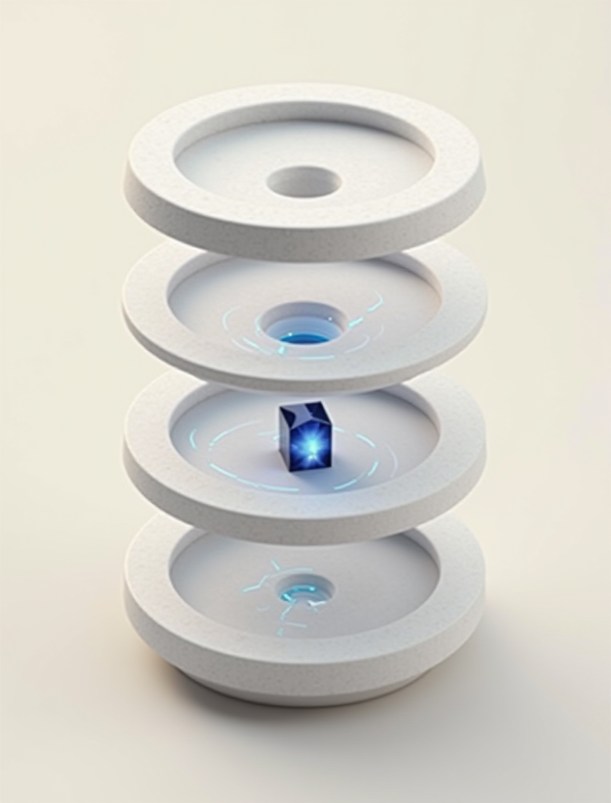

Every EU adult must have a digital identity wallet by end-2026. National wallets will ship (the Regulation makes them mandatory) as government IT: functional, ugly, single-jurisdiction. VF Wallet is the private-sector alternative: full ARF conformance, zero-knowledge age proofs, and an audit log you own that we cannot see.
Regulation (EU) 2024/1183 mandates that every member state offers a digital identity wallet to every resident by end-2026, with a target of 80% adoption by 2030. This is EU-level regulation, rolling out now. Four failure modes are visible in the national wallets pilot phase. One gap, filled by the private-sector alternative the Regulation itself permits.
States contract national wallets to systems integrators and deliver them as government IT projects. They will pass conformance and they will be functional. No one on those projects is losing sleep over the UI.
Some national implementations retain server-side presentation logs, for operational reasons or by design. Users have no export path and no visibility of what's kept.
If the state retires or replaces a government wallet, users get whatever migration the state chooses. Historical precedent is not reassuring. Belkin killed Wemo in a Milan press release; states can be equally sudden.
The Trust List federates by architecture, but user-experience quirks between DE and FR and IE and IT are real. Nobody's UX team has your Malta-EU-diaspora edge case as a priority.
The VF network runs across three jurisdictions: Malta, Germany, United Kingdom. Vincent, the operators and the sister companies all put their VF identity through this wallet before any customer does. The proof runs on our own floor.
Anyone whose life is spread across two or three member states. Malta+Germany. Ireland+France. Italy+Netherlands. We designed this product for the daily paper cuts of proving identity across borders.
Buying wine online. Age-gated forums. Any place you'd rather prove "over 18" without handing over a photograph of your driving licence. Zero-knowledge age proofs make the wallet earn its keep on day one.
The Business tier for legal-person credentials. Sign as VF Empire Corp Ltd. Prove the firm's tax residence. Delegate presentation to staff members with formal delegation attestations. Everything the state paperwork demands, done digitally.
Anyone who watched a wallet, ledger, or trust-critical service get sold, enshittified, retired, or subpoenaed. We built this one the other way: Terms § 16 warranty, Permanence Guarantee (Terms § 15), transparency log for every release.
National wallets ask users to trust the state's IT contractor. VF Wallet ships evidence instead: selective disclosure verified per presentation, an audit log the user owns and we cannot see, zero-knowledge age proofs where the credential permits, and every firmware release signed twice, in public, in different EU jurisdictions.
The wallet displays every field before disclosure, warns on every over-broad request, and records every disclosure in your audit log, never ours.
Prove age ≥ 18 without revealing your date of birth. Integrated with the EU Age Verification App shipping end-2026. First-mover on the primitive.
Two operators in different EU jurisdictions sign every firmware update and record it in a public Merkle transparency log. Third-party CI mirrors in Berlin and Reykjavik validate the reproducible builds.
R·01 ships as a Rust core with FFI bindings to Swift and Kotlin, a thin backend that never sees plaintext, and a reference verifier for third-party integrators. Every subsystem uses well-studied open primitives (Ed25519, X25519, Argon2id, XChaCha20-Poly1305, BLAKE3) plus two new sub-primitives added to `vf-privacy-kit`: `zk-age-proof` and `wsc-attestation`. Like every VF system, it leaves the lab with the engine fitted and the harness tuned.

Native SwiftUI on iOS 17+; Kotlin/Compose on Android 12+ including GrapheneOS and /e/OS, with zero Google Play Services dependency. The user-facing surface: consent screens, presentation flows, audit-log inspection, panic-wipe.
Append-only SQLite table on device, BLAKE3-chained, WSCD-signed. It records every presentation with the verifier's purpose statement verbatim, fields disclosed, session binding. Exportable as PDF or JSON. Included in the sealed sync blob for backup. Panic-wipe destroys it.
SQLite database encrypted at rest with XChaCha20-Poly1305. Key derived from PIN via Argon2id (t=3, m=64 MiB, p=4). Stores credentials in their native format: mdoc for ISO 18013-7, SD-JWT-VC for attestations, zero-knowledge proofs for age verification.
Wallet Secure Cryptographic Device. Apple Secure Enclave on iOS. Android StrongBox Keymaster on Android. Certified external hardware (Yubikey NFC) as fallback. Signing keys never leave hardware. Attestation to verifiers on request.
PID + QEAA + PuB-EAA + EAA + Age Verification proofs. iOS + Android. Malta launch with day-one cross-border acceptance in Germany, France, Ireland, Italy via the EU Trust List. 6–7 months of build after seed close, then ~7 months of regulatory review to Trust-List entry.
SPEC COMPLETEMobile driving licence (ISO 18013-5). Health-professional, employer, tax-residence attestations. Wallet-to-wallet peer-to-peer. Business-entity wallets. Delegated presentation (carer on behalf of dependent). Desktop Tauri client. Web wallet. Extended to Austria, Netherlands, Portugal, Spain, and the rest.
NEXTVF Wallet PID becomes the login for VF Mail, FileIT, Guardian Shield, FuelIT. Enterprise SSO integration. Non-EU cross-border (UK + EEA). BBS+ unlinkable presentations if ARF adopts. Delegated presentation for minors integrating with VF Home parental controls.
PLANNEDThirteen-section spec covering credential model, WSCD abstraction, selective disclosure, ARF §7 presentation protocols, thin backend architecture, Trust List integration, banned dependencies and the MCP server contract.
PUBLISHED · 2026-09-13 →From nation-state signature-supply-chain attack to hostile household adversary. Every primary threat named with residual-risk analysis. Twelve threat-driven test scenarios enumerated for third-party audit.
PUBLISHED · 2026-09-13 →The evidence pack VF submits to the accredited conformance-audit body. WSCD, selective disclosure, presentation protocols, Trust List integration, privacy commitments, cryptography, mapped section-by-section against ARF v1.4 with test evidence.
PUBLISHED · 2026-09-13 →Executive summary, product, market and regulatory tailwind, traction targets, technology and IP, team plan, financials, risks, the ask (€2–4m seed for the five-product family) and portfolio context.
PUBLISHED · 2026-09-13 →Everything you need on your side to run it,
and nothing you don’t.
Regulation (EU) 2024/1183 requires every member state to offer a digital identity wallet to every resident by end-2026, with a target of 80% adoption by 2030. National wallets will ship as government IT. VF Wallet is the private-sector alternative the Regulation itself permits: full ARF v1.4 conformance, Malta-issued, built by VF Empire for people.
Yes, where the credential permits. VF Wallet uses zero-knowledge age proofs to prove age ≥ 18 without disclosing the date itself, integrated with the EU Age Verification App shipping end-2026. Before any disclosure the wallet displays every field the verifier asked for and warns on every over-broad request, so you present only what was requested.
Only you can see it. Every presentation is recorded in an append-only audit log on your device, BLAKE3-chained and WSCD-signed, with the verifier's purpose statement verbatim, the fields disclosed and the session binding. It is exportable as PDF or JSON, included in your sealed sync blob for backup, and VF cannot see it. Panic-wipe destroys it.
Malta issuance on day one, with cross-border acceptance in Germany, France, Ireland and Italy via the EU Trust List. R·01 carries PID, QEAA, PuB-EAA, EAA and Age Verification proofs. R·02 adds the mobile driving licence (ISO 18013-5), health, employer and tax-residence attestations, business-entity wallets, and extends coverage to Austria, the Netherlands, Portugal, Spain and the rest.
iOS 17+ with the Apple Secure Enclave, and Android 12+ with StrongBox, including GrapheneOS, /e/OS and LineageOS with no Google Play Services dependency. A Yubikey NFC serves as the certified external fallback; signing keys never leave hardware. Recovery uses a 24-word phrase and new-device pairing, with 2-of-2 EU threshold recovery on the Plus tier and a duress PIN option.
The R·01 launch target is 2027 Q1-Q2, pending seed close, the ARF conformance audit, Malta MCA notification and Trust-List entry: roughly seven months of parallel regulatory work from wave-3 code close, after 6 to 7 months of build. Two operators in different EU jurisdictions sign every release into a public Merkle transparency log, with CI mirrors in Berlin and Reykjavik.
R·01 launch target 2027 Q1-Q2 pending seed close, ARF conformance audit, Malta MCA notification, and Trust-List entry, approximately seven months of parallel regulatory work from wave-3 code close.